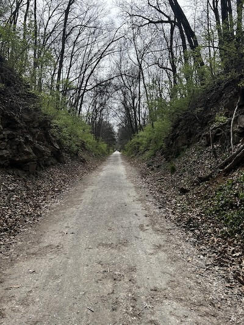

On April 13th, 2025, my friend Emma and I went on our first walk on the MKT Trail together. The MKT Trail is almost nine miles long and goes through different areas of Columbia, Missouri.
The temperature that day was in the 80s, so we decided that it was the perfect day to try out the trail. Here are some pictures of our four mile walk.

The beginning of the trail was full of trees that hung over us.
Emma decides what route we want to take on the trail map. We start walking toward the lake.
On the side of the trail, we found a Violet!
On our way to the trail, we found a bridge overlooking a creek. Emma is looking over at the water.
Emma loved this purple tree we found in front of the lake.
Me and Emma ended the walk near a lake and decided to take a selfie.